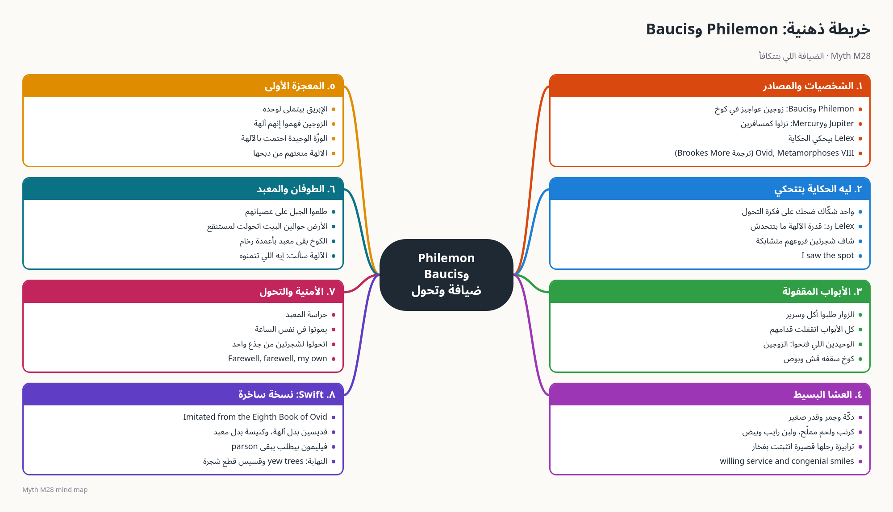

آداب الإنجليزية
: قواعد وجرامر وشعر وأساطير
⭐
0
🔥
استمر!
🏡
الدرس M28: فيليمون وباوكيس: الضيافة اللي بتتكافأ
📊
المستوى: A1
الدرس M28
🏛️
كورس الميثولوجيا
📄 حمّل PDF الدرس
📝 ملخص الدرس (عربي) PDF
📝 Lesson Summary (English) PDF
🧠 الخريطة الذهنية PDF
🧠 شوف الخريطة الذهنية للدرس

→
الدرس اللي قبله
كل دروس الكورس